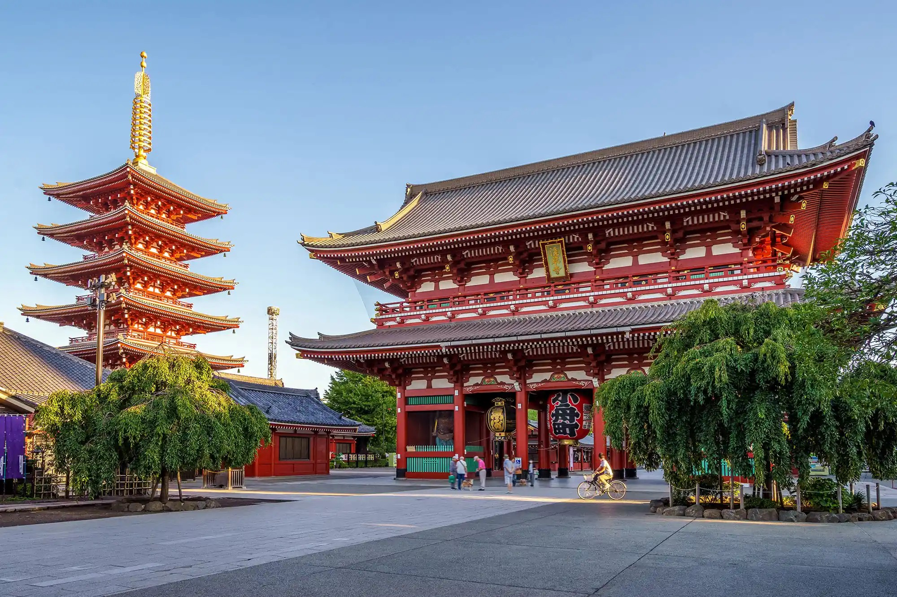
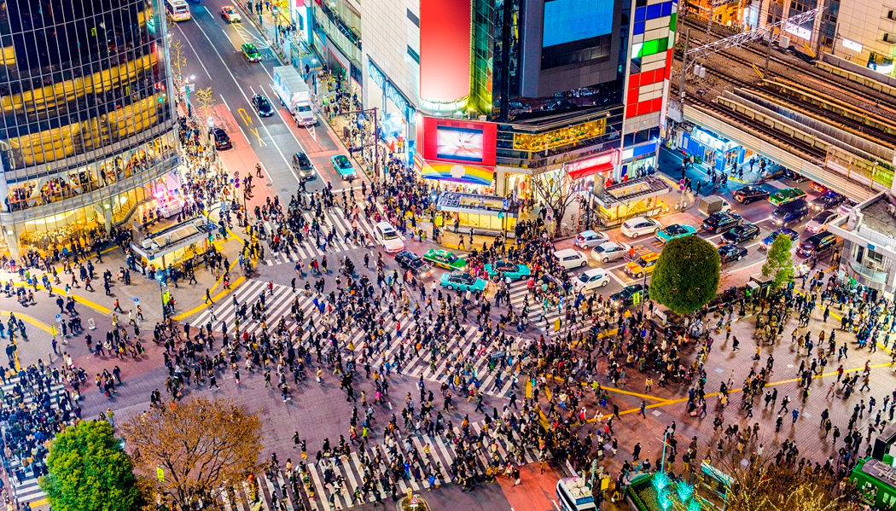
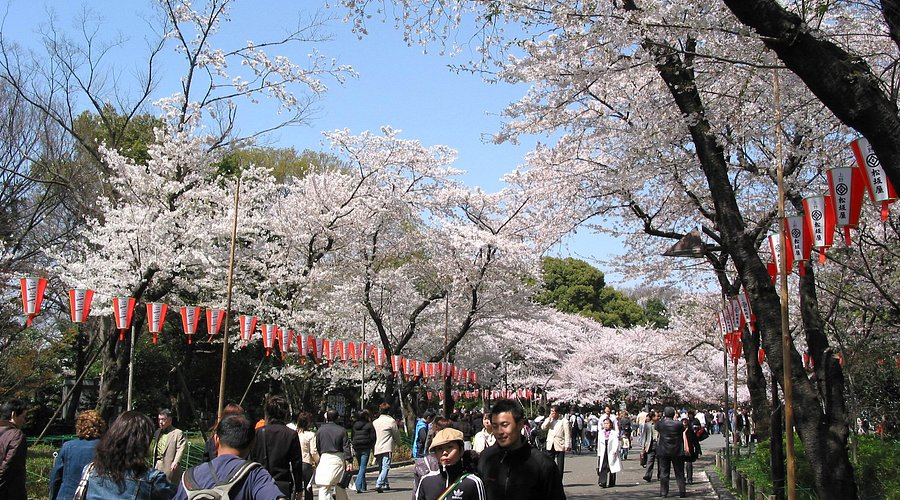

Tóquio, a capital do Japão, é uma metrópole vibrante que combina tradição e modernidade. Conhecida por seus arranha-céus futuristas, bairros eletrônicos como Akihabara e a rica cultura pop, Tóquio também abriga templos históricos, como o Senso-ji, e belos parques, como o Ueno Park. A cidade é um centro global de moda, gastronomia e tecnologia, oferecendo uma experiência única e inesquecível para os visitantes.

Na imagem acima, podemos ver o Templo Senso-ji, o templo budista mais antigo de Tóquio, localizado no bairro de Asakusa, famoso por seu portão Kaminarimon e atmosfera tradicional.

Na imagem acima, está o movimentado Cruzamento de Shibuya, um dos cruzamentos mais famosos e movimentados do mundo, símbolo da modernidade e energia de Tóquio.

Na imagem acima, vemos a Ueno Park, um dos parques mais famosos de Tóquio, conhecido por seus museus, zoológico e belas cerejeiras na primavera.
Assim como Rio de Janeiro, Lisboa também é conhecida por sua arte e cultura.
Quer saber mais sobre Tóquio? Clique aqui